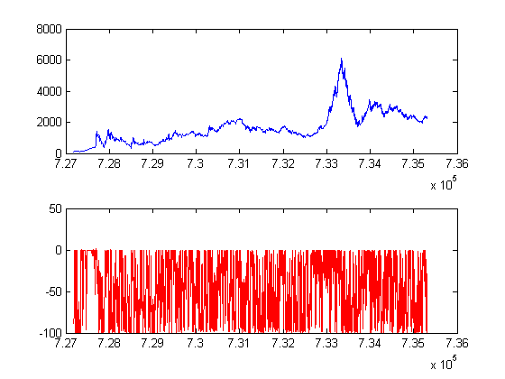

Contents
- demo of indicator
- accelerator oscillator
- Accumulation/Distribution oscillator
- Accumulation/Distribution oscillator
- Aroon Index
- Accumulative Swing Index
- Average True Range
- Bull and Bear Index
- bias
- bolling
- coppock
- Donchian Channel
- Commodity Channel Index
- Chaikin oscillator
- Chaikin Volatility
- Central Moving Average
- Chaikin Money Flow
- Detrend Price Oscilliator
- Force Index
- Hurst Index
- KDJ
- Keltner Channel
- Moving Average
- Money Flow Index
- Momentum
- On-Balance Volume
- Psy 心理线
- Price Volume Trend
- Relative Strenghth Index
- Parabolic SAR
- Stochastic Oscilliator
- Trix index
- True Strength Index
- William Rate
- William Line
demo of indicator
all numbers in functions are default value and optional.
clear; clc; close; % doc ind; load('Y:\24.pub-Strat\技术指标\ta_selector\indicator\sample_ind.mat');
accelerator oscillator
[ acVal ] = ind.aco( HighPrice , LowPrice, 5, 34 ); figure('name','aco'); subplot(2,1,1); plot(Dates,ClosePrice); subplot(2,1,2); plot(Dates, acVal,'r');
Accumulation/Distribution oscillator
[ adoVal ] = ind.ado( HighPrice, LowPrice, OpenPrice, ClosePrice ); figure('name','ado'); subplot(2,1,1); plot(Dates,ClosePrice); subplot(2,1,2); plot(Dates, adoVal,'r');
Accumulation/Distribution oscillator
[ adlVal ] = ind.adl( HighPrice, LowPrice, ClosePrice, Volume ); figure('name','adl'); subplot(2,1,1); plot(Dates,ClosePrice); subplot(2,1,2); plot(Dates, adlVal,'r');
Aroon Index
[ aroon_up, aroon_down ] = ind.aroon( HighPrice, LowPrice, 25 ); figure('name','aroon'); subplot(2,1,1); plot(Dates,ClosePrice); subplot(2,1,2); plot(Dates, aroon_up,'r', Dates, aroon_down, 'g');
Accumulative Swing Index
[ asiVal, siVal ] = ind.asi( OpenPrice, HighPrice, LowPrice, ClosePrice ); figure('name','asi'); subplot(2,1,1); plot(Dates,ClosePrice); subplot(2,1,2); plotyy(Dates, asiVal, Dates, siVal);
Average True Range
[ atrVal ] = ind.atr( HighPrice, LowPrice, ClosePrice, 14 ); figure('name','atr'); subplot(2,1,1); plot(Dates,ClosePrice); subplot(2,1,2); plot(Dates, atrVal,'r');
Bull and Bear Index
[ bbiVal ] = ind.bbi( ClosePrice, 3, 6, 12, 24 ); figure('name','bbi'); subplot(2,1,1); plot(Dates,ClosePrice); subplot(2,1,2); plot(Dates, bbiVal,'r');
bias
[ biasVal ]= ind.bias( ClosePrice, 14 ); figure('name','bias'); subplot(2,1,1); plot(Dates,ClosePrice); subplot(2,1,2); plot(Dates, biasVal,'r');
bolling
[ mid, uppr, lowr ] = ind.bollinger( ClosePrice, 20, 0, 2); figure('name','bolling'); subplot(2,1,1); plot(Dates,ClosePrice); subplot(2,1,2); plot(Dates, mid,'r',Dates,uppr, 'b', Dates, lowr, 'g');
coppock
[ copVal ] = ind.coppock(ClosePrice, 11, 14,10); figure('name','coppock'); subplot(2,1,1); plot(Dates,ClosePrice); subplot(2,1,2); plot(Dates, copVal,'r');

Donchian Channel
[ mid, upband, lowband ] = ind.donchian(ClosePrice,20); figure('name','donchian'); subplot(2,1,1); plot(Dates,ClosePrice); subplot(2,1,2); plot(Dates, mid,'--r', Dates, upband,'b', Dates, lowband,'g');
Commodity Channel Index
[ cciVal ] = ind.cci( HighPrice, LowPrice, ClosePrice, 20, 20, 0.015 ); figure('name','cci'); subplot(2,1,1); plot(Dates,ClosePrice); subplot(2,1,2); plot(Dates, cciVal,'r');

Chaikin oscillator
[ choVal ] = ind.chaiko( HighPrice, LowPrice, ClosePrice, Volume ); figure('name','chaiko'); subplot(2,1,1); plot(Dates,ClosePrice); subplot(2,1,2); plot(Dates, choVal,'r');
Chaikin Volatility
[ chavolVal ] = ind.chavol( HighPrice, LowPrice, 10, 10); figure('name','chavol'); subplot(2,1,1); plot(Dates,ClosePrice); subplot(2,1,2); plot(Dates, chavolVal,'r');
Central Moving Average
[ cmaVal ] = ind.cma( ClosePrice, 10 ); figure('name','cma'); subplot(2,1,1); plot(Dates,ClosePrice); subplot(2,1,2); plot(Dates, cmaVal,'r');

Chaikin Money Flow
[ cmfVal ] = ind.cmf ( HighPrice, LowPrice, ClosePrice, Volume, 20 ); figure('name','cmf'); subplot(2,1,1); plot(Dates,ClosePrice); subplot(2,1,2); plot(Dates, cmfVal,'r');
Detrend Price Oscilliator
[ dpoVal ] = ind.dpo ( ClosePrice, 20 ); figure('name','dpo'); subplot(2,1,1); plot(Dates,ClosePrice); subplot(2,1,2); plot(Dates, dpoVal,'r');
Force Index
[ forceVal ] = ind.force( ClosePrice, Volume, 13 ); figure('name','force'); subplot(2,1,1); plot(Dates,ClosePrice); subplot(2,1,2); plot(Dates, forceVal,'r');
Hurst Index
[hurstVal] = ind.hurst(ClosePrice, 250); figure('name','hurst'); subplot(2,1,1); plot(Dates,ClosePrice); subplot(2,1,2); plot(Dates, hurstVal,'r');

KDJ
[ k, d, j ] = ind.kdj(ClosePrice,HighPrice,LowPrice,9,2); figure('name','kdj'); subplot(2,1,1); plot(Dates,ClosePrice); subplot(2,1,2); plot(Dates, k,'r',Dates, d, 'b', Dates, j, 'g');
Keltner Channel
[upband, lowband] = ind.keltner( HighPrice, LowPrice, ClosePrice, 20, 20 ,2.5); figure('name','Keltner'); subplot(2,1,1); plot(Dates,ClosePrice); subplot(2,1,2); plot(Dates, upband,'b', Dates, lowband,'g');
Moving Average
[ maVal ] = ind.ma( ClosePrice, 10,'e' ); figure('name','ma'); subplot(2,1,1); plot(Dates,ClosePrice); subplot(2,1,2); plot(Dates, maVal,'r');
Money Flow Index
[ mfiVal, pmf, nmf ] = ind.mfi(HighPrice, LowPrice, ClosePrice, Volume, 14 ); figure('name','mfi'); subplot(4,1,1); plot(Dates,ClosePrice); subplot(4,1,2); plot(Dates, mfiVal); subplot(4,1,3); plot(Dates, pmf); subplot(4,1,4); plot(Dates, nmf);
Momentum
[ mtmVal ] = ind.mtm( ClosePrice, 10); figure('name','mtm'); subplot(2,1,1); plot(Dates,ClosePrice); subplot(2,1,2); plot(Dates, mtmVal,'r');
On-Balance Volume
[ obvVal ] = ind.obv( ClosePrice, Volume ); figure('name','obv'); subplot(2,1,1); plot(Dates,ClosePrice); subplot(2,1,2); plot(Dates, obvVal,'r');
Psy 心理线
[ psyVal ] = ind.psy( ClosePrice, 12 ); figure('name','psy'); subplot(2,1,1); plot(Dates,ClosePrice); subplot(2,1,2); plot(Dates, psyVal,'r');
Price Volume Trend
[ pvtVal ] = ind.pvt( ClosePrice, Volume ); figure('name','pvt'); subplot(2,1,1); plot(Dates,ClosePrice); subplot(2,1,2); plot(Dates, pvtVal,'r');
Relative Strenghth Index
[ rsiVal, rsVal ] = ind.rsi( ClosePrice, 14); figure('name','rsi'); subplot(2,1,1); plot(Dates,ClosePrice); subplot(2,1,2); plot(Dates, rsiVal,'r');
Parabolic SAR
[ sarVal ] = ind.sar( HighPrice, LowPrice, 0.02, 0.2 ); figure('name','SAR'); subplot(2,1,1); plot(Dates,ClosePrice); subplot(2,1,2); plot(Dates, sarVal,'r');
Stochastic Oscilliator
[ kVal, dVal ] = ind.sto( HighPrice, LowPrice, ClosePrice, 10, 3, 'e' ); figure('name','sto'); subplot(3,1,1); plot(Dates,ClosePrice); subplot(3,1,2); plot(Dates, kVal,'r'); subplot(3,1,3); plot(Dates, dVal,'g');
Trix index
[ trixVal, trixMa ] = ind.trix (ClosePrice, 12, 20); figure('name','trix'); subplot(2,1,1); plot(Dates,ClosePrice); subplot(2,1,2); plot(Dates, trixVal,'r');
True Strength Index
[ tsiVal ] = ind.tsi (ClosePrice, 13, 25); figure('name','tsi'); subplot(2,1,1); plot(Dates,ClosePrice); subplot(2,1,2); plot(Dates, tsiVal,'r');
William Rate
[ willrVal ] = ind.willr( HighPrice, LowPrice, ClosePrice,14 ); figure('name','willr'); subplot(2,1,1); plot(Dates,ClosePrice); subplot(2,1,2); plot(Dates, willrVal,'r');
William Line
[ willlVar ] = ind.willl( HighPrice, LowPrice, ClosePrice ); figure('name','willline'); subplot(2,1,1); plot(Dates,ClosePrice); subplot(2,1,2); plot(Dates, willlVar,'r');